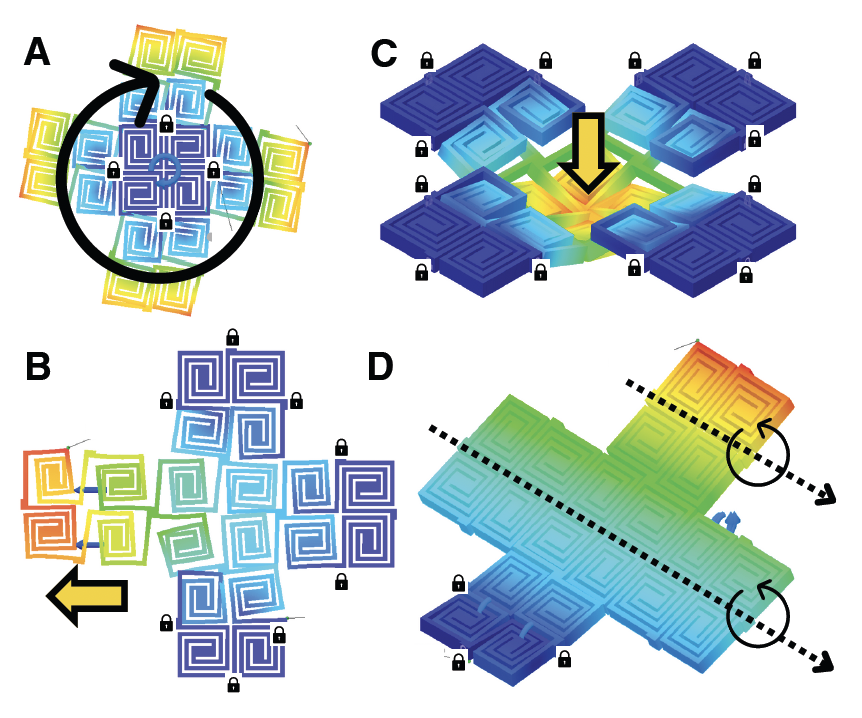
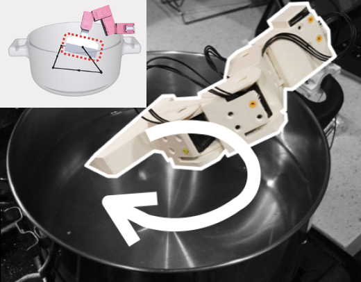
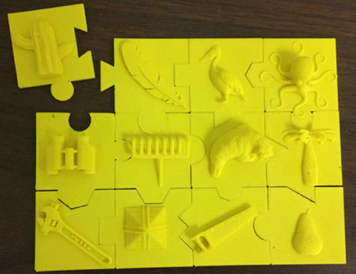

09/23 Excited to be part of the new NSF FW-HTF-RM project as a Co-PI
09/23 One paper accepted at
CSCW'24 for the first time!
09/23 One paper accepted at
NeurIPS'23 for the first time!
09/23 Resuming the
TxHCI Seminar Series with my awesome coorganizer Momona Yamagami @ Rice and Meng Xia in our department
07/23 One paper accepted at
Ubicomp'23 for the first time!
05/23 Serving as a subcommittee chair (Devices and Fabrication) for
CHI'24
01/23 One paper accepted at CHI'23
01/23 One paper accepted at Composite Sturcture (Elsevier)
07/22 Received two NSF Grants, HCC and FW-HTF-P as a PI
07/22 One paper accepted at
UIST'22
05/22 Serving on the program committee for
CHI'23
03/22 One paper accepted at
DIS'22
01/22 Two papers, One panel, and One LBW paper is accpeted at
CHI'22
01/22 Serving on the program committee for UIST'22
11/21 Organizing
4D Printing Workshop for K-12 students
10/21 Happy to be part of founding member of
VIVID Lab, Texas A&M Institute of Data Science!
10/21 One paper accepted at
Frontiers in Virtual Reality
08/21 One paper accepted at
SCF'21
07/21 Successfully organized a
virtual science camp for high school students and
E3 program to promote STEM/CTE educator's research experience
06/21 Serving on the program committee (PC) for
CHI'22
06/21 Recieved
Ralph E. Powe Junior Faculty Enhancement Award!
04/21 Serving as an HCI Area chair (PC) for
SCF'21
01/21 One paper accpeted to TExSS'21, Workshop on iUI'21
01/21 Serving on the program committee for
UIST'21
01/21 Panelist at Digital Fabrication at Korea HCI'21
12/20 Invited talk at
Tactual Labs
12/20 One paper accepted at CHI'21
12/20 One paper accepted at IUI'21
12/20 Recieved Triads for Transformation (T3) seed grant!
10/20 Programmable Filament is featured at
IEEE Spectrum and
ACM TechNews
10/20 One paper accepted at
TEI'21
09/20 Serving as a posters program co-chair at UIST'21
09/20 Started organizing the
TxHCI Seminar Series with awesome Cesar Toress at UTA and Sam Shorey at UT!
08/20 Programmable Filament got the Best Paper Honorable Mention Award!
07/20 Serving as a program committee (AC) for
EICS'21
06/20 One paper accepted at
NordiCHI'20
06/20 Two papers accepted at
UIST'20
05/20 Selected as a 9th Heidelberg Laureate Young Researcher!
03/20 Serving as a short paper char for
IUI'21
10/20 Serving on the program committee (AC) for
UIST'20
10/20 Serving as a Reg chair for
UIST'20
06/20 Serving as a Posters chair for
SCF'20
04/20 Invited talk, Berkeley Institute of Design, UC Berkeley
04/20 Serving as a steering committee for TxGraph'20
01/20 Started teaching CHI:Computer-Human Interaction (CSCE 436) for spring 2020
11/19 Invited talk at HCI@KAIST, Korea
11/19 Invited talk at KAIST EECS, Korea
11/19 Invited talk at
IPD Lab @ UNIST, Korea
11/19 Invited talk at Ehwa Woman's University, Korea
09/19 Received gift funding from
Adobe Research!
08/19 Started teaching
Fabricating Future Interaction Technologies (CSCE 667) for fall 2019
08/19 I am on the top of the
Adobe Research Fellowship page!
08/19 My first day as an assistant professor at
Texas A&M University
07/19 Two papers accpeted to
UIST'19
06/19 One paper accepted to
CogSci'19
05/19 Thesis defended
03/19 One paper accepted to
TEI'19
02/19 Serving as a Registrations co-chair at
UIST'19
12/19 Serving as an Associate Chair for LBW program at
CHI'19
12/19 One paper acceptedtot
CHI'19
07/18 Received
Adobe Research Fellowship
07/18 Invited talk @ HP Palo Alto
05/18 Invited talk @ SNU, Korea
E3D: Harvesting Energy from Everyday Kinetic Interactions Using 3D Printed Attachment Mechanisms
Abul Al Arabi, Xue Wang, Yang Zhang, Jeeeun Kim
In PProceedings of the ACM on Interactive, Mobile, Wearable and Ubiquitous Technologies (IMWUT, Presented at Ubicomp'23)
[
PDF]
 Tuning mechanical properties of 3D printed composites with PLA: TPU programmable filaments
Tuning mechanical properties of 3D printed composites with PLA: TPU programmable filaments
Aryabhat Darnal, Zaryab Shahid, Himani Deshpande, Jeeeun Kim, Anastasia Muliana
In Composite Structures Vol. 318, Elsevier
[
PDF]
Measurement Patterns: User-Oriented Strategies for Dealing with Measurements and Dimensions in Making Processes
Raf Ramakers, Danny Leen, Jeeeun Kim, Kris Luyten, Steven Houben, Tom Veuskens
In Proceedings of the 2023 CHI Conference on Human Factors in Computing Systems (CHI'23)
[
PDF]

An exploration of 3D printed freeform kerf structures
Aryabhat Darnal, Kamal Poluri, Himani Deshpande, Jeeeun Kim, Negar Kalantar, Anastasia Muliana
In Proceedings of SPIE Vol. 12484
[
PDF]
 ShrinkCells: Localized and Sequential Shape-Changing Actuation of 3D-Printed Objects via Selective Heating
ShrinkCells: Localized and Sequential Shape-Changing Actuation of 3D-Printed Objects via Selective Heating
Kongpyung (Justin) Moon, Haeun Lee, Jeeeun Kim, Andrea Bianchi
In Proceedings of the Annual Symposium on User Interface Software and Technology (UIST’22, To appear)
[
PDF]
CustomizAR: Facilitating Interactive Exploration and Measurement of Adaptive 3D Designs
Chen Liang, Anhong Guo, Jeeeun Kim
In Proceedings of ACM Conference on Designing Interactive Systems (DIS'22)
[
PDF]
Mobiot: Augmenting Everyday Objects into Moving IoT Devices Using 3D Printed Attachments Generated by Demonstration
Abul Al Arabi, Jiahao Li, Xiang Anthony Chen, Jeeeun Kim
In Proceedings of the 40th Annual ACM SIGCHI Conference on Human Factors in Computing Systems (CHI’22)
[
PDF]
Roman: Making Everyday Objects Robotically Manipulable with 3D-Printable Add-on Mechanisms
Jiahao Li, Alexis Samoylov, Jeeeun Kim, Xiang'Anthony' Chen
In Proceedings of the 40th Annual ACM SIGCHI Conference on Human Factors in Computing Systems (CHI’22)
[
PDF]
 Fab4D: An Accessible Hybrid Approach for Programmable Shaping and Shape Changing Artifacts
Fab4D: An Accessible Hybrid Approach for Programmable Shaping and Shape Changing Artifacts
Himani Deshpande, Clement Zheng, Courtney Starrett, Jinsil Hwaryoung Seo, Jeeeun Kim
In Proceedings of Sixteenth International Conference on Tangible, Embedded, and Embodied Interaction (TEI’22)
ACM SIGGRAPH 2022 Labs (SIGGRAPH'22)
[
PDF]
Telelife: The Future of Remote Living
Jason Orlosky, Misha Sra, Kenan Bektas, Huaishu Peng, Jeeeun Kim, Nataliya Kos’myna, Tobias Hollerer, Anthony Steed, Kiyoshi Kiyokawa & Kaan Aksit
In Frontiers of Virtual Reality
[
PDF]
Multi-ttach: Techniques to Enhance Multi-material Attachments in Low-cost FDM 3D Printing
Nahyun Kwon, Himani Deshpande, Md Kamrul Hasan, Aryabhat Darnal, & Jeeeum Kim
In Proceedings of the ACM SCF'21
[
PDF] [
Project Website/System]
 3D4ALL: Toward an Inclusive Pipeline to Classify 3D Contents
3D4ALL: Toward an Inclusive Pipeline to Classify 3D Contents
Nahyun Kwon, Chen Liang, Jeeeum Kim
In Proceedings of the TExSS'21 (Workshop on iUI'21)
[
PDF] [
Project Website/Open Dataset]
 EscapeLoom: Fabricating New Affordances for Hand Weaving
EscapeLoom: Fabricating New Affordances for Hand Weaving
Himani Deshpande, Haruki Takahashi, Jeeeum Kim
In Proceedings of the 39th Annual ACM SIGCHI Conference on Human Factors in Computing Systems (CHI’21)
[
PDF]
 HowDIY: Towards Meta-Design Tools to Support Anyone to 3D Print Anywhere
HowDIY: Towards Meta-Design Tools to Support Anyone to 3D Print Anywhere
Alexander Berman, Joshua Howell, Ketan Thakare, Francis Quek & Jeeeun Kim
In Proceedings of 26th Annual Conference on Intelligent User Interfaces (IUI’21)
[
PDF] [
Project Website/System]
 OmniSoft: A Design Tool for Soft Objects by Example
OmniSoft: A Design Tool for Soft Objects by Example
Jeeeun Kim, Qingnan (James) Zhou, Amanda Ghassaei, Xiang ‘Anthony’ Chen
In Proceedings of International Conference on Tangible, Embedded, and Embodied Interaction (TEI’21)
[
PDF]
Programmable Filament: Printed Filaments for Multi-material 3D Printing
Haruki Takahashi, Parinya Punpongsanon & Jeeeun Kim
In Proceedings of the Annual Symposium on User Interface Software and Technology (UIST’20)
*SIGCHI Best of UIST Honorable Mention Award
[
PDF]

Romeo: A Design Tool for Embedding Transformable Parts in 3D Models to Robotically Augment Default Functionality.
Jiahao Li, Jeeeun Kim, & Xiang ‘Anthony’ Chen
In Proceedings of the Annual Symposium on User Interface Software and Technology (UIST’20)
[
PDF]
“Anyone Can Print”: Supporting Collaborations with 3D Printing Services to Empower Broader Participation in Personal Fabrication
Alexander Berman, Francis Quek, Robert Woodward, Osazuwa Okundaye & Jeeeun Kim
In Proceedings of the 11th Nordic Conference on Human-Computer Interaction (NordiCHI’20)
[
PDF]
 3D Printed Fabric: Techniques for Design and 3D Weaving Programmable Textiles.
3D Printed Fabric: Techniques for Design and 3D Weaving Programmable Textiles.
Haruki Takahashi & Jeeeun Kim
In Proceedings of the Annual Symposium on User Interface Software and Technology (UIST’19)
[
PDF]
Robiot: A Design Tool for Actuating Everyday Objects with Automatically generated 3D Printable Mechanisms.
Jiahao Li, Jeeeun Kim, & Xiang ‘Anthony’ Chen
In Proceedings of the Annual Symposium on User Interface Software and Technology (UIST’19)
[
PDF]

Parent-Child Interactions and Word Learning: Introducing vocabulary in different play contexts.
Andrew J Mertens, Mary Roszel, Jeeeun Kim, Tom Yeh, & Eliana Colunga
In Proceedings of the 41st Annual Meeting of the Cognitive Science Society (CogSci’19 To appear)
3D Pen + 3D Printer: Exploring the Role of Human and Fabrication Machine in Creative Making.
Haruki Takahashi & Jeeeun Kim
In Proceedings of the 37th Annual ACM SIGCHI Conference on Human Factors in Computing Systems (CHI’19)
[
PDF] [
bibtex]
Mechamagnets: Designing and Fabricating Haptic and Functional Physical Inputs with Embedded Magnets.
Clement Zheng, Jeeeun Kim, Daniel Leithinger, Mark D Gross, & Ellen Yi-Luen Do
In Proceedings of International Conference on Tangible, Embedded, and Embodied Interaction (TEI’19)
[
PDF] [
bibtex]
Compositional 3D Printing: Expanding & Supporting Workflows Towards Compositional 3D Printing.
Jeeeun Kim, Clement Zheng, Haruki Takahashi, Mark D Gross, Daniel Ashbrook, Tom Yeh
In Proceedings of Acm Symposium On Computational Fabrication (SCF'18)
[
PDF] [
bibtex]
CraftML: 3D Modeling is Web Programming.
Jeeeun Kim & Tom Yeh
In Proceedings of the 36th Annual ACM Conference on Human Factors in Computing Systems (CHI'18)
[
PDF] [
bibtex]
 Understanding Uncertainty in Measurement and Accommodating its Impact in 3D Modeling and Printing.
Understanding Uncertainty in Measurement and Accommodating its Impact in 3D Modeling and Printing.
Jeeeun Kim, Anhong Guo, Tom Yeh, Scott E Hudson, & Jennifer Mankoff
In Proceedings of ACM Conference on Designing Interactive Systems (DIS'17)
[
PDF] [
bibtex]
Machines as Co-Designers: A Fiction on the Future of Human-Fabrication Machine Interaction. (alt.chi)
Jeeeun Kim, Haruki Takahashi, Homey Miyashita, Michelle Annett, Tom Yeh.
In Proceedings of Extended Abstracts of the 35th Annual ACM Conference on Human Factors in Computing Systems (CHI'17)
[
PDF] [
bibtex]
Facade: Auto-generating Tactile Interfaces to Appliances.
Anhong Guo, Jeeeun Kim, Xiang `Anthony'; Chen, Tom Yeh, Scott E Hudson, Jennifer Mankoff, & Jeffrey P. Bigham
In Proceedings of the 35th Annual ACM Conference on Human Factors in Computing Systems (CHI'17)
[
PDF] [
bibtex]
FoldMecha: Exploratory Design and Engineering of Mechanical Papercraft.
Hyunjoo Oh, Jeeeun Kim, Cory Morales, Mark D. Gross, Michael Eisenberg, & Sherry Hsi
In Proceedings of International Conference on Tangible, Embedded, and Embodied Interaction (TEI’17)
[
PDF] [
bibtex]
Reprise: A Design Tool for Specifying, Generating, and Customizing 3D Printable Adaptations on Everyday Objects.
Xiang 'Anthony' Chen, Jeeeun Kim, Stelian Coros, Jennifer Mankoff, & Scott E. Hudson
In Proceedings of the Annual Symposium on User Interface Software and Technology
UIST 2016
[
PDF] [
bibtex]
Seen Music: Ambient Music Data Visualization for Children with Hearing Impairments.
Jeeeun Kim, Swamy Ananthanarayan, & Tom Yeh
In Proceedings of ACM Interaction Design and Children
IDC 2015
[
PDF] [
bibtex]
Toward 3D-Printed Movable Tactile Pictures for Children with Visual Impairments.
Jeeeun Kim, & Tom Yeh
In Proceedings of the 33rd Annual ACM Conference on Human Factors in Computing Systems (CHI'15)
[
PDF][
bibtex]
SikuliBot: Automating Physical User Interface Using Images.
Jeeeun Kim, Michael Kasper, Tom Yeh, & Nikolas Correll
In Proceedings of Adjunct
UIST 2014
[
PDF] [
bibtex]
3D Printed Tactile Picture Books for Children with Visual Impairments: A Design Probe.
Abigale Stangl, Jeeeun Kim, & Tom Yeh
In Proceedings of ACM Interaction Design and Children
IDC 2014
[
PDF] [
bibtex]
Technology to Support Emergent Literacy Skills in Young Children with Visual Impairments.
Abigale Stangl, Jeeeun Kim, & Tom Yeh
In Proceedings of Extended Abstracts.
CHI 2014 Toronto, Canada
[
PDF][
bibtex]
Tactile Picture Books for Young Children with Visual Impairment.
Jeeeun Kim, Abigale Stangl, Ann Eisenberg, & Tom Yeh
TEI 2014 Works-in-Progress, Munich, Germany
[
PDF] [
bibtex]